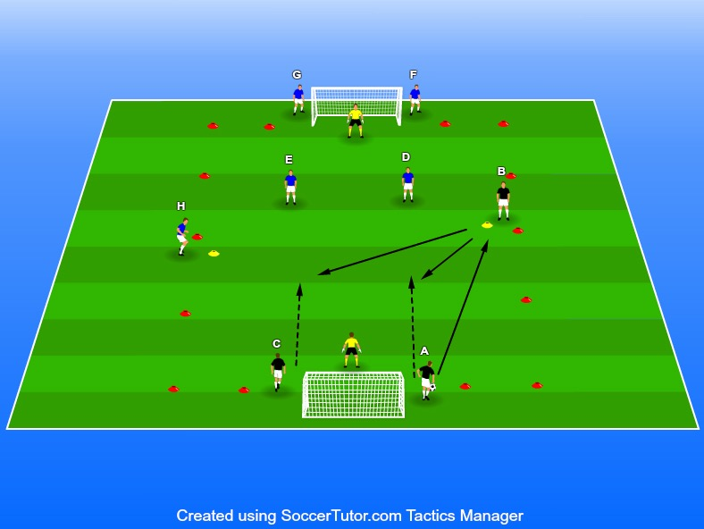

Utmana, omställningar, avslut samt målvaktsspel
Yta ca 25x20 m (anpassa efter
12-20 spelare
1 boll igång samtidigt men alla 2. Därefter sätter spelare A igång spelet genom en passning till spelare B
2 koner + tillräckligt för att måste spela tillbaka till antingen spelare A eller C.
Övningen börjar med att spelare D & spelare E göra den lite större agerar försvarare för det blåa laget • 12-20 spelare • 1 boll igång samtidigt men alla 2. Därefter sätter spelare A igång spelet genom en passning till spelare B bollar i målen 3. Spelare B får därefter inte vända upp eller ta med bollen utan hen • 2 koner + tillräckligt för att måste spela tillbaka till antingen spelare A eller C. kona upp en sidlinje
Efter tillbakapass anfaller spelare A, B och C mot spelare E och D resten är inte delaktiga. När bollen antingen hamnat utanför det konade området på något sätt är bollen död. Den är också död om spelare E eller D bryter bollen samt om det blir mål.
När anfallet är över ställer sig E och D längst bak i kön vid sitt mål medans spelare A och C som precis anfallit blir försvarare.
Spelare G spelar nu upp till spelare H och spelare H spelar tillbaka på antingen spelare G eller F. Nu anfaller de 3 mot 2 och spelare A eller spelare C får inte börja pressa förän spelare H har nuddat bollen. Försvararna får alltså inte störa uppspelet.
Därefter fortsätter övningen så här fram och tillbaka.
Fokus i övningen är på omställningar och för att de ska lyckas krävs god kommunikation och rörelse. Som tränare är det därför framförallt viktigt att hålla tempot uppe i övningen.
Se till att det inte blir statiskt utan att de rör sig på olika sätt och testar sig fram till det som fungerar. Vi vill ju också att målvakterna ska få träna så jag rekommenderar ett poängsystem. Om anfallande lag träffar mål får de 1 poäng om de gör mål får de 2.
H och B agerar ju anfallare i denna övning och försök ha 2-3 personer från varje lag vid konan. Rotera dessa med ungefär 2-3 minuters intervall.